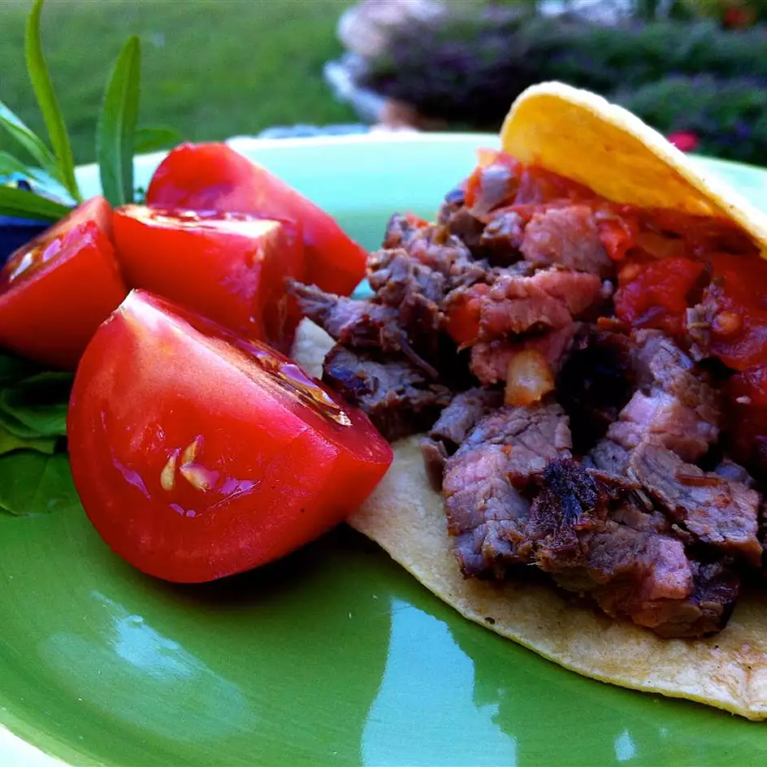

Home
Al Pastor Tacos

Description:
You can replace Al Pastor with any meat you like. Al Pastor will always be my preference! This savory dish is easy to cook and eat!
Ingredients:
- 1/2 onion, chopped
- 2 cloves garlic
- 2 teaspoons chopped fresh parsely
- 1 teaspoon dried oregano
- 1 teaspoon paprika
- 1 teaspoon anise seed
- 1 teaspoon black pepper
- 1/2 teaspoon ground cumin
- 1/2 teaspoon dried sage
- 1/4 teaspoon ground thyme
- 2 bay leaves
- 5 whole cloves
- 1/2 cup soy sauce
- 1 cup cider vinegar
- 1 orange, juiced
- 1 lime, juiced
- 2 pounds Al Pastor meat
- 1 onion, chopped
- 1/4 (7 ounce) can chipotle peppers in adobo sauce, or to taste
- 2 cloves garlic
- 1 tablespoon water
- 24 (5 inch) corn (or flour) tortillas
- 1/2 onion, chopped
- 1/2 bunch cilantro, chopped
- 1 bunch radishes, halved
Directions:
- Place 1/2 chopped onion, 2 cloves garlic, parsley, oregano, paprika, anise seed, black pepper, cumin, sage, thyme, bay leaves, cloves, soy sauce, vinegar, orange juice, and lime juice in a blender; pulse until a very well-blended paste is achieved, scraping down sides as needed, 3 to 5 minutes. Spread paste on both sides of the flank steak. Wrap steak in plastic and refrigerate at least 6 hours to overnight.
- Preheat an outdoor grill for medium-high heat and lightly oil the grate. Remove excess marinade from flank steak.
- Grill steak until it begins to firm and is hot and slightly pink in the center, about 8 minutes per side. An instant-read thermometer inserted into the center should read 140 degrees F (60 degrees C). Chop steak into small pieces and transfer to a platter; cover and keep warm until ready to serve.
- Place 1 chopped onion, tomatoes, chipotle peppers, and 3 cloves garlic in a blend; pulse until desired consistency. Add water if the salsa becomes too thick. Transfer salsa to a bowl.
- Heat tortillas in a microwave sade plate until warm, about 1 minute.
- Serve Al Pastor over stacks of two corn tortillas with salsa and sprinkle with remaining 1/2 chopped onion, radishes, and cilantro.